Exploring a credibility-based approach for tree-gain estimation
The motivation for this experiment was to explore an alternative to gradient-based gain measure by integrating the volatility of split candidates to identify the best node split.
Review of key gradient-based MSE characteristics
The figures below illustrate the behavior of vanilla gradient-based approach using a mean-squared error (MSE) loss. The 2 colors represent the observations belonging to the left and right children.
Key observations:
- the gain is invariant to the volatility: the top vs bottom figures differ only by the std dev of the observations. The associated gain is identical, which is aligned with the gradient-based approach to gain: the gain matches the reduction in the MSE, which is identical regardless of the dispersion. It's strictly driven by their mean.
- the gain scales linearly with the number of observations: the right vs left figures contrast different number of observations (100 vs 10k), and show that gain is directly proportional.
- the gain scales quadratically with the spread: moving from a spread of 1.0 to 0.1 between the 2nd and 3rd row results in a drop by 100x of the gain: from 50.0 to 0.5.
| 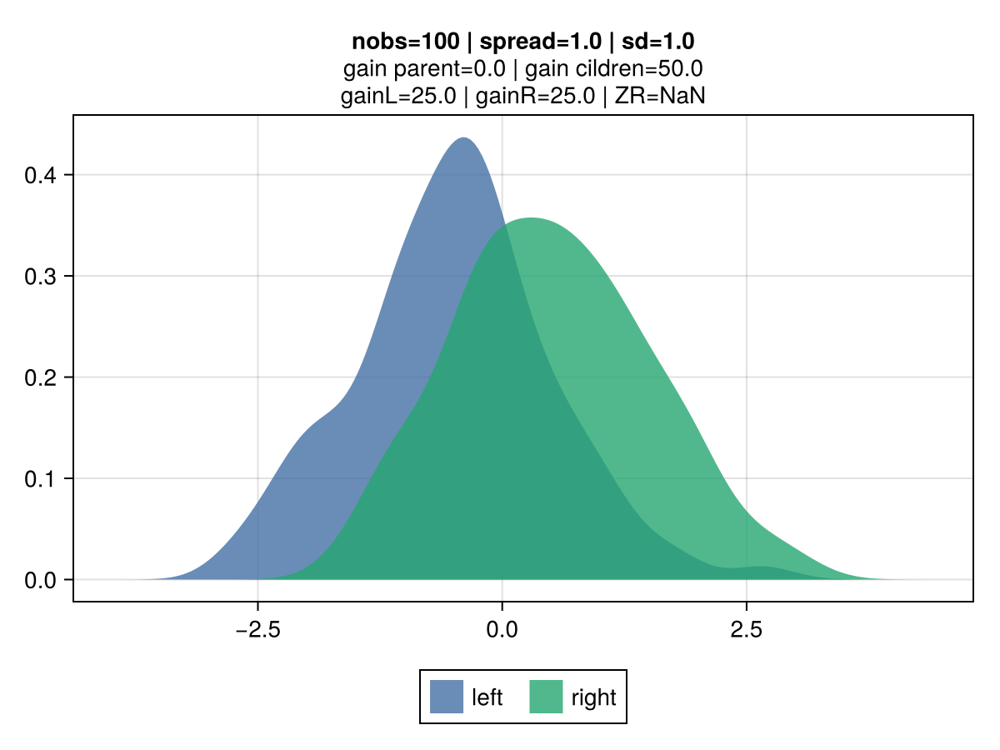 | 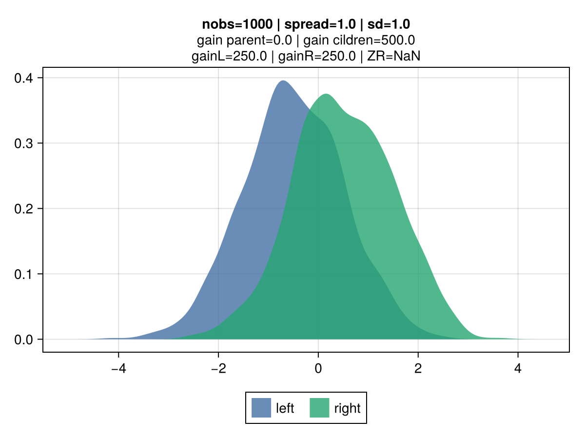 |
|---|---|
| 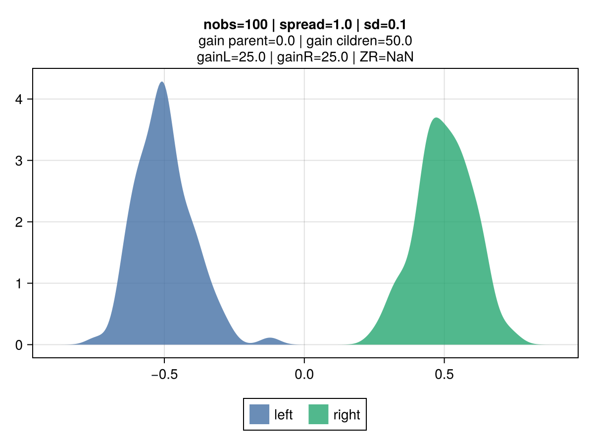 | 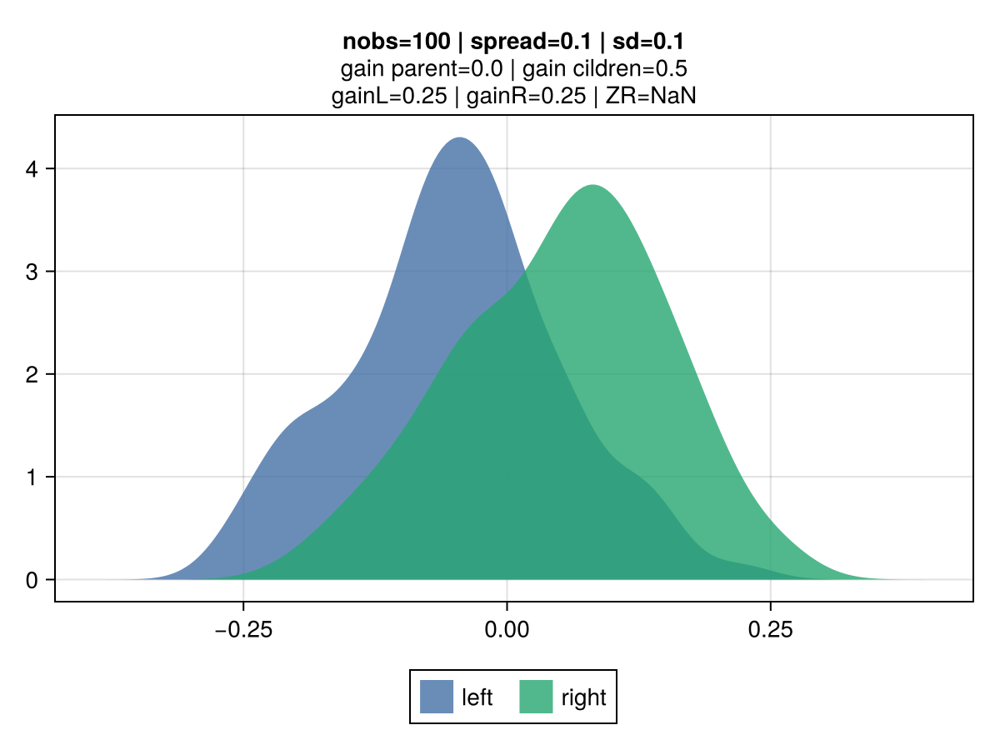 |
Credibility-based gains
The idea is for gain to reflect varying uncertainty levels for observations associated to each of the tree-split candidates. For tree-split candidates with an identical spread, the intuition is that candidates with a lower volatility, all other things being equal, should be preferred. The original inspiration comes from credibility theory, a foundational notion in actuarial science with direct connection mixed effect models and bayesian theory. Key concept is that the credibility associated with a set of observations is driven by the relative effect of 2 components:
- Variance of the Hypothetical Means (VHM): if large differences between candidates means are expected, a greater credibility is assigned.
- Expected Value of the Process Variance (EVPV): if the data generation process of a given candidate has a large volatility, a smaller credibility is assigned.
The Buhlmann credibility states that the optimal linear posterior estimator of a group mean is:
Z * X̄ + (1 - Z) * μ, whereX̄is the group mean andμthe population mean.
This approach results in a shift of perspective in how the gain is derived. Classical gradient-based is about deriving a second-order approximation of the loss curve for a tree-split candidate. The gain corresponds to the reduction in this approximated loss by taking the prediction that minimises the quadratic loss curve. The credibility-based takes a loss function agnostic approach, and view the gain as the total absolute change in the credibility-adjusted predicted value. Example, if a child has a mean residual of 2.0, credibility of 0.5 and 100 observations, the resulting gain is: 2.0 * 0.5 * 100 = 100.0, where 2.0 * 0.5 corresponds to the credibility adjusted prediction.
VHM is estimated as the square of the mean of the spread between observed values and predictions:
VHM = E[X] = mean(y - p)
EVPV is estimated as the variance of the observations. This value can be derived from the aggregation of the first and second moment of the individual observations:
EVPV = E[(x - μ)²] = E[X²] - E²[X]
Credibility-based losses in EvoTrees
Two credibility-based losses are supported in EvoTreeRegressor:
- cred_var:
VHM / (VHM + EVPV) - cred_std:
sqrt(VHM) / (sqrt(VHM) + sqrt(EVPV))
Just like the gradient-based MSE error, the gain grows linearly with the number of observations, all other things being equal. However, a smaller volatility results in an increased gain, as shown in 2nd vs 1st row.
| 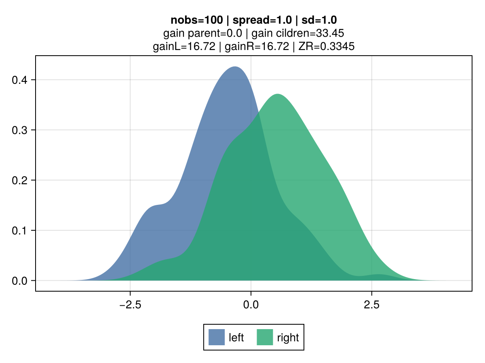 | 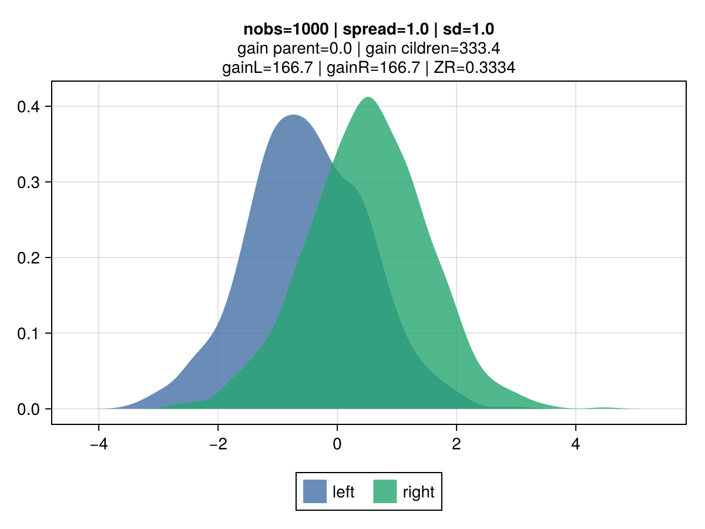 |
|---|---|
| 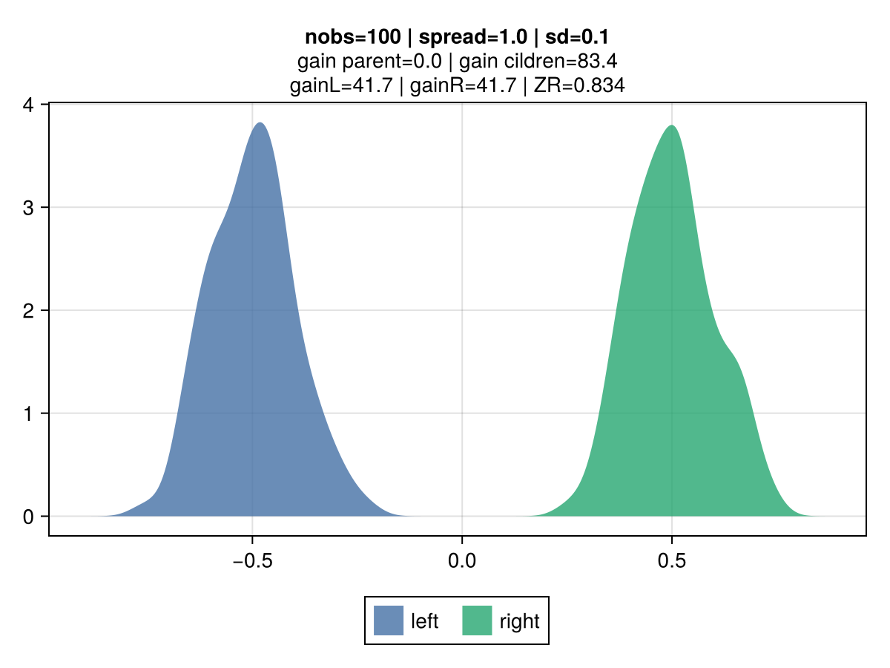 | 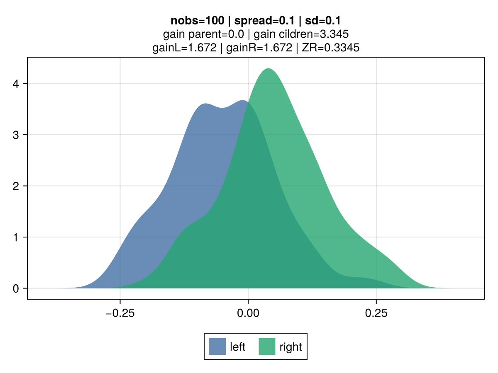 |
Simulation grid
The chart below show the associated credibility and gain for a given node split candidate for various spreads and standards deviations.
nobs = 1000
sd_list = [0.01, 0.05, 0.1, 0.2, 0.5, 1, 2, 5]
spread_list = [0.01, 0.05, 0.1, 0.2, 0.5, 1] | 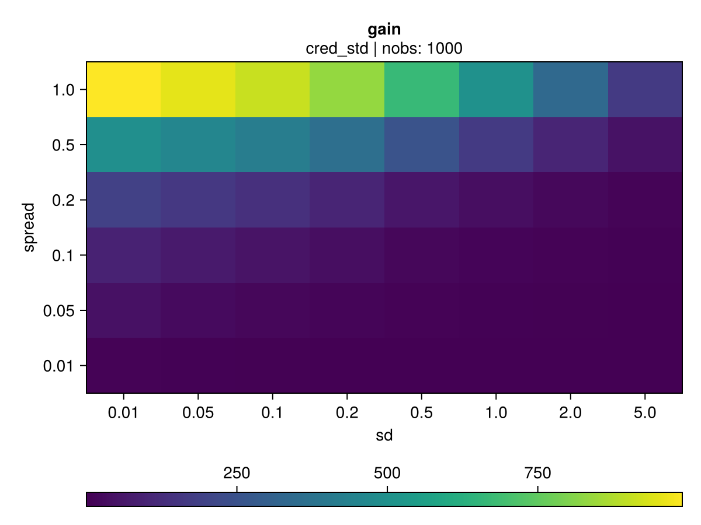 |
|---|---|
Illustration of different cred-based decision between cred_std to MSE
Despite both mse and cred_std resulting in the same prediction, which matches the mean of the observations, the associated gain differs due to the volatility penalty.
The following illustrates a minimal scenario of 2 features, each with only 2 levels.
| 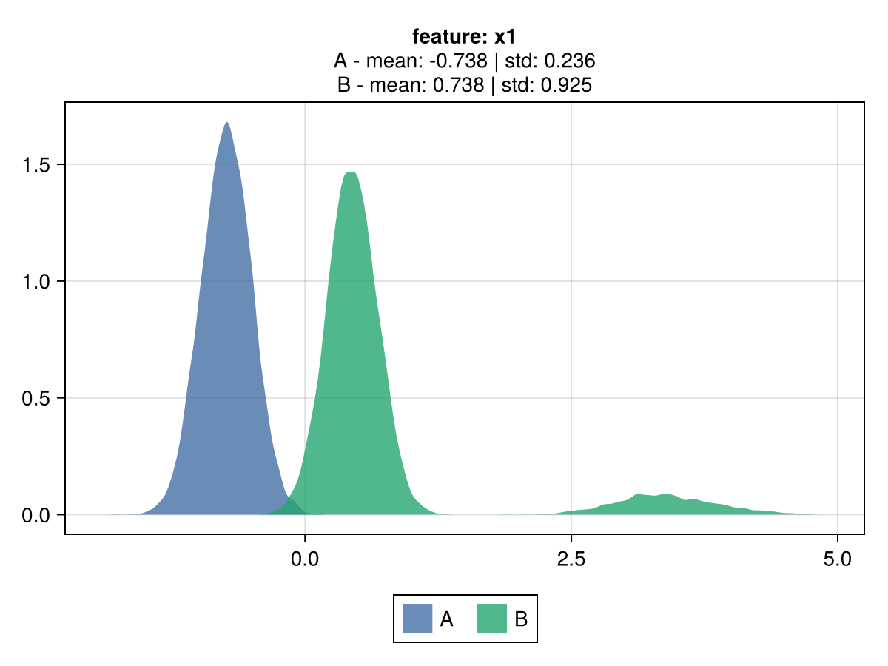 | 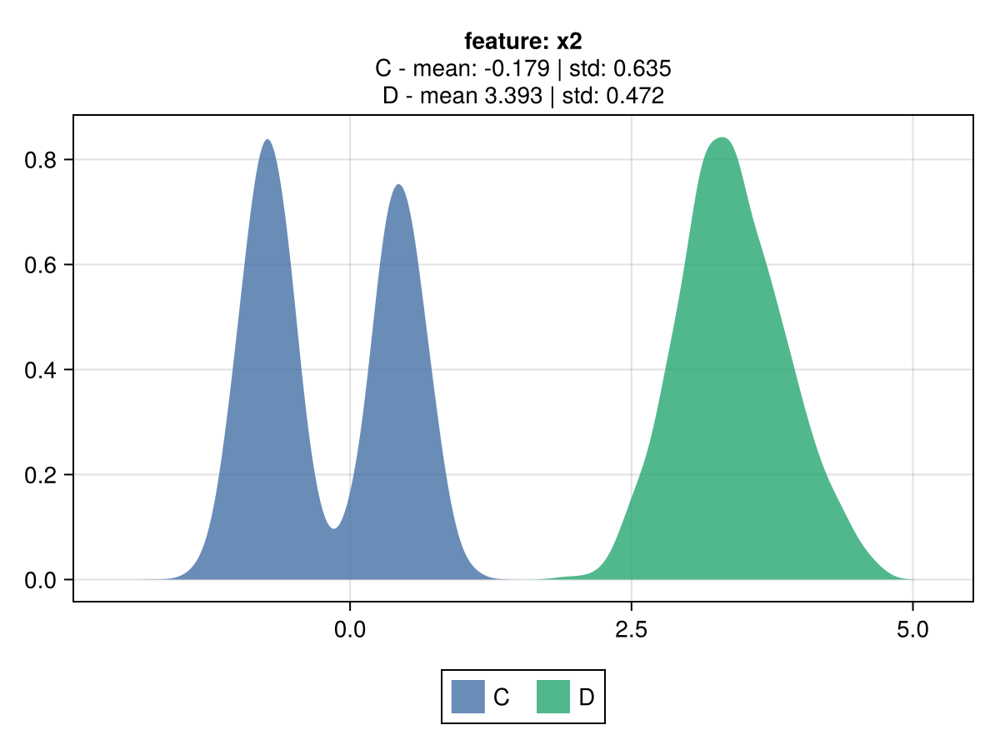 |
|---|---|
config = EvoTreeRegressor(loss=:mse, nrounds=1, max_depth=2)
model_mse = EvoTrees.fit(config, dtrain; target_name="y")
EvoTrees.Tree{EvoTrees.MSE, 1}
- feat: [2, 0, 0]
- cond_bin: UInt8[0x01, 0x00, 0x00]
- gain: Float32[12113.845, 0.0, 0.0]
- pred: Float32[0.0 -0.017858343 0.3391479]
- split: Bool[1, 0, 0]config = EvoTreeRegressor(loss=:cred_std, nrounds=1, max_depth=2)
model_std = EvoTrees.fit(config, dtrain; target_name="y")
EvoTrees.Tree{EvoTrees.CredStd, 1}
- feat: [1, 0, 0]
- cond_bin: UInt8[0x02, 0x00, 0x00]
- gain: Float32[8859.706, 0.0, 0.0]
- pred: Float32[0.0 0.07375729 -0.07375729]
- split: Bool[1, 0, 0]Benchmarks
From MLBenchmarks.jl.
| model | metric | mse | cred_var | cred_std |
|---|---|---|---|---|
| boston | mse | 6.3 | 5.95 | 5.43 |
| boston | gini | 0.945 | 0.947 | 0.952 |
| year | mse | 74.9 | 74.6 | 74.2 |
| year | gini | 0.662 | 0.664 | 0.661 |
| msrank | mse | 0.55 | 0.551 | 0.549 |
| msrank | ndcg | 0.511 | 0.509 | 0.51 |
| yahoo | mse | 0.565 | 0.589 | 0.568 |
| yahoo | ndcg | 0.795 | 0.787 | 0.794 |